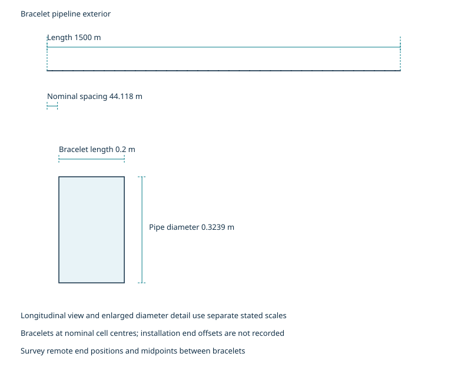

The 34 bracelets at 44.1 m provide 850.0 kg against 846.1 kg and 45.3 A against 6.9 A; the arrangement meets the criterion within the recorded 1587.4 m protected length per side.
Published geometry and synthetic or assumed CP inputs; screening examples requiring engineering review.
clearance required before outward release
| Revision | Date | What changed and why |
|---|---|---|
| 0 | 2026-10-25 | Initial step data and public report copies from saved case evidence. |
| 1 | 2026-10-26 | Correct pipeline verdict summaries, governing required counts and phase-specific density locators. |

State geometry, environment, coating and anode inputs.
| Quantity | Symbol | Value | Unit | Input class | Basis | Source |
|---|---|---|---|---|---|---|
| Structure and zones | not applicable | Bracelet pipeline; exterior seawater surfaces | not applicable | synthetic | Synthetic case input and saved results | [7], [8] |
| Design life | t | 30.0 | yr | synthetic | Synthetic case input and saved results | [7] |
| Pipeline length | length_m | 1500.0 | m | synthetic | Synthetic case input and saved results | [8] |
| Outer diameter | outer_diameter_m | 0.3239 | m | synthetic | Synthetic case input and saved results | [8] |
| Wall thickness | wall_thickness_m | 0.0159 | m | synthetic | Synthetic case input and saved results | [8] |
| Surface area | outer_surface_area_m2 | 1526.3 | m² | synthetic | Synthetic case input and saved results | [8] |
| Internal fluid temperature | T | 60.0 | °C | synthetic | Synthetic case input and saved results | [7] |
| Seawater temperature and resistivity | not applicable | NOT_EVALUATED: not recorded by this case; electrolyte properties require confirmation | not applicable | synthetic | Synthetic case input and saved results | [7], [8] |
| Anode alloy and type | not applicable | aluminium; bracelet | not applicable | synthetic | Synthetic case input and saved results | [7], [8] |
| Mean coating breakdown | mean_factor | 0.045 | dimensionless | synthetic | DNVGL-RP-F103 (September 2019, amended May 2021); Coating breakdown factors; dnv-rp-f103 2019-09 Table A-1 (as cited by the case pack) | [8] |
| Final coating breakdown | final_factor | 0.060 | dimensionless | synthetic | DNVGL-RP-F103 (September 2019, amended May 2021); Coating breakdown factors; dnv-rp-f103 2019-09 Table A-1 (as cited by the case pack) | [8] |
| Coating category | not applicable | FBE | not applicable | synthetic | Synthetic case input and saved results | [7], [8] |
| Net mass per anode | m_a | 25.0 | kg | synthetic | Synthetic case input and saved results | [7] |
| Anode length | L_a | 0.200 | m | synthetic | Synthetic case input and saved results | [7] |
| Anode thickness | d_a | 0.040 | m | synthetic | Synthetic case input and saved results | [7] |
| Electrochemical capacity | epsilon | 2000 | Ah/kg | synthetic | DNVGL-RP-F103 (September 2019, amended May 2021); Anode material design values; dnv-rp-f103 2019-09 Table 6-3 (as cited by the case pack) | [8] |
The stated input classes and missing data apply to this example.
State the criteria and their recorded edition basis.
| Quantity | Symbol | Value | Unit | Input class | Basis | Source |
|---|---|---|---|---|---|---|
| Utilisation factor | u | 0.80 | dimensionless | synthetic | DNVGL-RP-F103 (September 2019, amended May 2021); Anode utilisation factor; dnv-rp-f103 2019-09 [6.4.2] (anode utilisation factor) (as cited by the case pack) | [8] |
| Protective potential and reference electrode | not applicable | NOT_EVALUATED: qualify the applicable potential and reference electrode before a survey criterion is set | not applicable | synthetic | Synthetic case input and saved results | [7], [8] |
| Checks applied | not applicable | Mass and final output; initial output is not recorded by this route | not applicable | synthetic | Synthetic case input and saved results | [7], [8] |
Only the recorded aggregate criteria are assessed.
Compare lifetime mass and current-output requirements.
| Quantity | Symbol | Value | Unit | Input class | Basis | Source |
|---|---|---|---|---|---|---|
| Mean current demand | I_mean | 5.2 | A | synthetic | Synthetic case input and saved results | [8] |
| Final current demand | I_final | 6.9 | A | synthetic | Synthetic case input and saved results | [8] |
| Initial current demand | not applicable | NOT_EVALUATED: this route records mean and final demand | not applicable | synthetic | Synthetic case input and saved results | [7], [8] |
| Initial output per anode | not applicable | NOT_EVALUATED: this route records final output only | not applicable | synthetic | Synthetic case input and saved results | [7], [8] |
| Anodes needed for initial output | not applicable | NOT_EVALUATED: this route records mass and final-output counts | not applicable | synthetic | Synthetic case input and saved results | [7], [8] |
| Final output per anode | I_a_final | 1.3327 | A | synthetic | Synthetic case input and saved results | [8] |
| Final anode resistance | R_a_final | 0.187588 | Ω | synthetic | Synthetic case input and saved results | [8] |
| Anodes needed for mass | N_mass | 34 | anodes | synthetic | Synthetic case input and saved results | [8] |
| Anodes needed for final | N_final | 6 | anodes | synthetic | Synthetic case input and saved results | [8] |
| Governing check | not applicable | mass | not applicable | synthetic | Synthetic case input and saved results | [7], [8] |
The 34 bracelets at 44.1 m provide 850.0 kg against 846.1 kg and 45.3 A against 6.9 A; the arrangement meets the criterion within the recorded 1587.4 m protected length per side.
State the recorded allocation and positions requiring attention.
| Quantity | Symbol | Value | Unit | Input class | Basis | Source |
|---|---|---|---|---|---|---|
| Arrangement anode count | N_p | 34 | anodes | synthetic | Synthetic case input and saved results | [8] |
| Bracelet spacing | s | 44.1 | m | synthetic | Synthetic case input and saved results | [8] |
| Protected length per side of a bracelet | L_p | 1587.4 | m | synthetic | Synthetic case input and saved results | [8] |
| Deepest and remote positions | not applicable | NOT_EVALUATED: route elevations and installation end offsets are not recorded; watch cell midpoints and ends | not applicable | synthetic | Synthetic case input and saved results | [7], [8] |
Allocation is limited to the quantities recorded in the case data.
Compare the provided arrangement with the saved demand.
| Quantity | Symbol | Value | Unit | Input class | Basis | Source |
|---|---|---|---|---|---|---|
| Anodes provided | N_p | 34 | anodes | synthetic | Synthetic case input and saved results | [8] |
| Anodes needed | N_r | 34 | anodes | synthetic | Synthetic case input and saved results | [8] |
| Mass provided | M_p | 850.0 | kg | synthetic | Synthetic case input and saved results | [7], [8] |
| Mass needed | M_r | 846.1 | kg | synthetic | Synthetic case input and saved results | [8] |
| Final output provided | I_p_final | 45.3 | A | synthetic | Synthetic case input and saved results | [8] |
| Mass margin | margin | 0.5 | % | synthetic | Synthetic case input and saved results | [7], [8] |
| Final margin | margin | 559.7 | % | synthetic | Synthetic case input and saved results | [8] |
| Aggregate result | not applicable | meets the criterion | not applicable | synthetic | Synthetic case input and saved results | [7], [8] |
The 34 bracelets at 44.1 m provide 850.0 kg against 846.1 kg and 45.3 A against 6.9 A; the arrangement meets the criterion within the recorded 1587.4 m protected length per side.
Identify survey positions and the inputs needed to set an intervention plan.
| Quantity | Symbol | Value | Unit | Input class | Basis | Source |
|---|---|---|---|---|---|---|
| Maintainer monitoring and initial-design rule | not applicable | When protection criteria are not met or their attainment is uncertain, monitoring is required. Where monitoring and retrofit are not planned, provide adequate anodes in the initial design. | not applicable | synthetic | Synthetic case input and saved results | [7], [8] |
| Potential measurement positions | not applicable | remote ends of each spacing cell; midpoints between bracelets; deepest route positions | not applicable | synthetic | Synthetic case input and saved results | [7], [8] |
| Reference electrode | not applicable | NOT_EVALUATED: confirm the applicable electrode and potential basis | not applicable | synthetic | Synthetic case input and saved results | [7], [8] |
| Survey frequency | not applicable | NOT_EVALUATED: service schedule and access are required | not applicable | synthetic | Synthetic case input and saved results | [7], [8] |
| Trigger potential | not applicable | NOT_EVALUATED: qualified criterion and measured potentials are required | not applicable | synthetic | Synthetic case input and saved results | [7], [8] |
| Action at trigger | not applicable | NOT_EVALUATED: investigate; size local intervention after condition and continuity checks | not applicable | synthetic | Synthetic case input and saved results | [7], [8] |
| Retrofit quantity and required date | not applicable | NOT_EVALUATED: local demand, depletion, access and lead time are required | not applicable | synthetic | Synthetic case input and saved results | [7], [8] |
| Initial-design option | not applicable | Provide adequate anode mass and output before installation if monitoring and retrofit are not planned | not applicable | synthetic | Synthetic case input and saved results | [7], [8] |
| Inputs still needed | not applicable | reference electrode and applicable potential criterion; measured potentials at deep and remote positions; survey access and service schedule; remaining anode mass and depletion rate; electrical continuity and local current demand; retrofit access and delivery lead time | not applicable | synthetic | Synthetic case input and saved results | [7], [8] |
NOT_EVALUATED: supply the listed inputs before setting survey criteria and intervention dates.
Retain the assessed aggregate arrangement subject to the stated limits.
When protection criteria are not met or their attainment is uncertain, monitoring is required. Where monitoring and retrofit are not planned, provide adequate anodes in the initial design.
NOT_EVALUATED: no local quantity or intervention date is established.
Aggregate sizing only. Local potentials, allocation, continuity and installed condition are not established.
DNVGL-RP-F103 (September 2019, amended May 2021); edition and locators retained from the case pack only.
[7] docs/domains/cathodic_protection/reports/cases/S06/input.yml; commit d34bda5cf18d11be48b17c7ba94e5c8127af2bf2; SHA-256 4b8965b9118af33e7469ecc35d53b7761bc40de7f6fb1d531bbf8fe52cbbf64c. Repository source, not a hosted link.
[8] docs/domains/cathodic_protection/reports/cases/S06/results.json; commit d34bda5cf18d11be48b17c7ba94e5c8127af2bf2; SHA-256 a38c7099789ede9ba656836367d6cf6931c452d038afa12c0d5110442a78df2d. Repository source, not a hosted link.